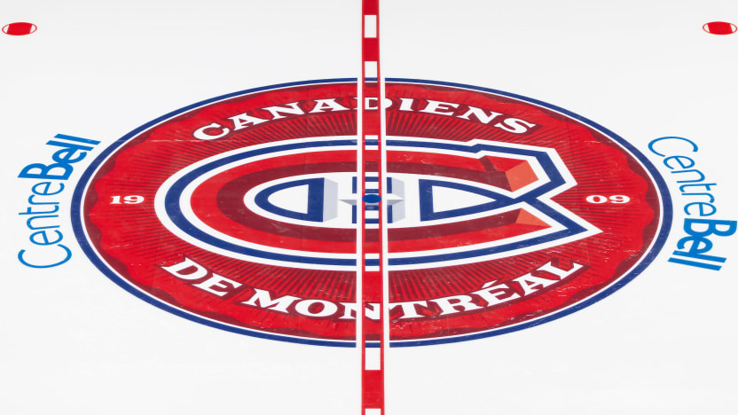
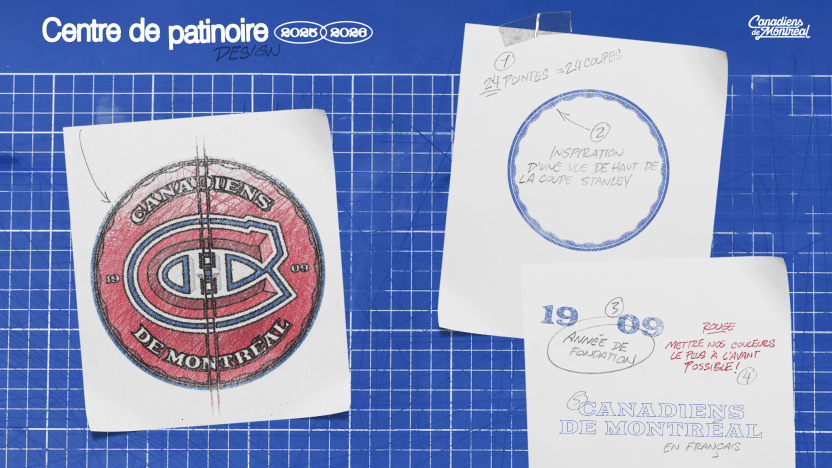

Les Canadiens dévoilent un nouveau logo au centre de la patinoire
La nouvelle illustration en couleur pourra être observée pour la première fois au Face-à-face des espoirs les 13 et 14 septembre

par
Canadiens de Montréal
/ canadiens.com
04 septembre 2025
MONTRÉAL – Les adversaires du Tricolore verront rouge dès la mise en jeu initiale, cette saison.
Les Canadiens ont dévoilé un nouveau logo en couleurs à effet 3D au centre de la glace, mercredi, et ce dernier fait un clin d’œil à l’histoire du Club et au marché dans lequel il évolue.
La conception propose un recouvrement complet en rouge du cercle de mises en jeu central, remplaçant le logo géant des Canadiens qui figurait au milieu de la patinoire depuis 2018.
Voici un aperçu des autres éléments qui la composent :
1909
L’année où l’équipe a été fondée fait référence à plus de 100 ans d'existence, un siècle marqué de moments historiques et de nouveauté.
Canadiens de Montréal
Le nom officiel de l’équipe en français souligne des racines qui lui sont uniques à travers la LNH ainsi que la langue officielle du Québec.
Le cercle bosselé
Inspirées de la coupe Stanley vue de haut, 24 rainures positionnées en bordure témoignent des 24 championnats remportés par l’équipe, un record dans la LNH.
La couleur rouge
La couleur du chandail porté par l’équipe à Montréal rappelle le domicile le plus intimidant du circuit.

Les partisans pourront voir en personne le nouveau logo au centre de la patinoire dès les 13 et 14 septembre, à l’occasion du Face-à-face des espoirs présenté par IGA, en collaboration avec Voisin. Les billets de matchs sont offerts à aussi peu que 10 $ et sont disponibles via ce lien.